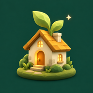

本周累计学习
0 小时 00 分从本周一开始，慢慢积累
时光村落TIMEGROVEYOUR LITTLE WORLD
我的村庄
初生聚落2 座建筑 · 3 位居民
距离上次学习打卡
尚未开始第一段专注，正等着你村庄居民
3 位再学习 60 分钟，迎来新邻居林间的家
每一份专注，都在让这里变得不同正在种下第一棵树…
晴 · 适合专注的一天
拖动旋转 · 滚轮缩放 · 点击建筑
村庄正在悄悄生长
木材 +18/h · 星砂 +2/h
留一段时间给自己
准备出发下一块砖，从此刻开始25:00一小步，也算数。